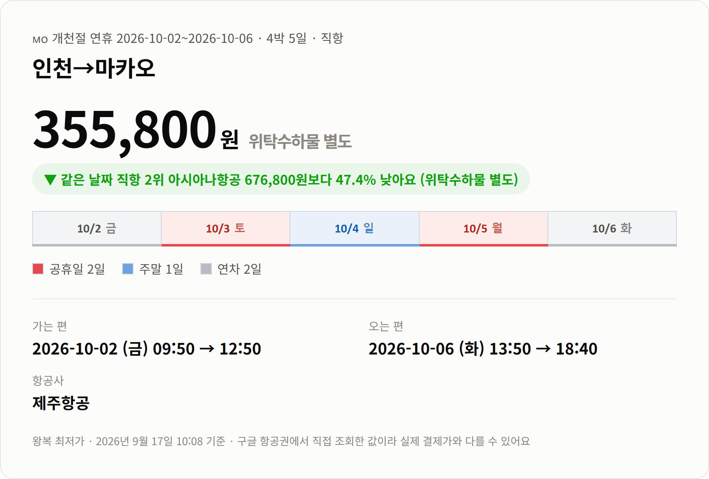
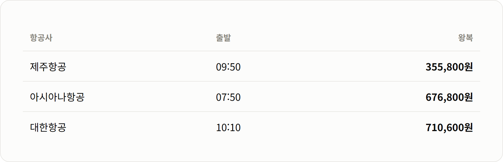
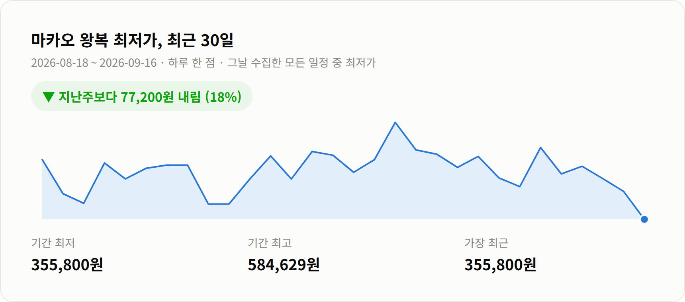

안녕하세요 :)
개천절 연휴에 짧게 다녀올 곳을 찾는다면
이번엔 마카오를 한번 보셨으면 해서 가져왔어요.
10월 3일이 토요일이라 5일 월요일이 대체공휴일이에요.
앞뒤로 금요일 하루, 화요일 하루만 연차를 내면
10월 2일부터 6일까지 4박 5일이 나오더라고요.
그 일정에 제주항공 직항 왕복이 355,800원이에요(위탁수하물 별도).
같은 날짜 아시아나항공 직항이 676,800원이라
거의 절반 가격이고, 표도 한 장짜리 왕복이에요.

가는 편: 10/2(금) 09:50 인천 → 12:50 마카오 · 제주항공
오는 편: 10/6(화) 13:50 마카오 → 18:40 인천 · 제주항공
일정: 4박 5일 · 직항 (비행 약 4시간, 마카오가 한국보다 1시간 느려요)
연차: 2일
새벽에 공항 갈 일도, 한밤중에 떨어질 일도 없는 시간대예요.
점심 무렵 도착해서 체크인하면 첫날 오후부터 바로 걸어 다닐 수 있고
마지막 날도 오전은 온전히 쓰고 나와요.
인천에 저녁 6시 40분에 내리니까
다음 날 출근도 부담이 덜한 편이에요.
같은 10월 2일 출발·6일 귀국 직항만 놓고 보면 이래요.

같은 날 같은 직항인데 아시아나보다 321,000원 낮아요.
짐을 가볍게 다니면 제주항공, 부칠 짐이 많으면 수하물 요금까지 더해서 비교해 보세요.

이 일정은 최근 일주일 최저가가 그 전주 433,000원보다 18% 내려서 지금 값이 됐어요.
다만 구글 항공권은 이 가격을 "보통" 수준으로 보고 있어서
앞으로 더 내려갈지는 알 수 없어요.
마카오는 걸어서 다니는 도시예요.
구시가지 골목이 이어져 있어서 지도 한 장 들고
광장에서 성당, 성당에서 사원으로 옮겨 다니다 보면 하루가 가요.
[사진 자리] 성바울 성당 유적 야경
성바울 성당 유적은 앞면 벽 하나만 남은 성당이에요.
계단 위에 정면만 우뚝 서 있어서 낮에 봐도 신기한데
해가 지고 조명이 들어오면 분위기가 완전히 달라져요.
점심 무렵 도착하는 일정이라 첫날 저녁 코스로 넣기 좋아요.
[사진 자리] 아마 사원 입구
아마 사원은 마카오라는 이름이 여기서 나왔다는 이야기가 전해지는 곳이에요.
언덕을 따라 작은 전각들이 층층이 놓여 있어서
향 냄새 나는 계단을 천천히 올라가 보는 맛이 있어요.
하루는 저녁에 마카오 타워 쪽 바닷가를 걸어 보세요.
해 질 무렵 타워와 다리에 불이 들어오는 걸 보고 있으면
4박 중 하룻저녁을 여기에 쓴 게 아깝지 않더라고요.
[사진 자리] 마카오 타워와 사이반 다리 블루아워
에그타르트는 어느 골목에서든 쉽게 보여요.
4박이면 가게마다 하나씩 비교해 보는 여유도 생기고요.
10월 마카오는 평균 최고기온이 28도, 습도는 71%예요.
여름 더위가 한풀 꺾이는 간절기라 걸어 다니기 한결 나아요.
낮에는 반팔로 충분하고, 저녁 산책이나 실내 냉방에 대비해 얇은 겉옷 하나면 돼요.
한국 여권이면 마카오는 비자 없이 90일까지 머물 수 있어요.
여권 유효기간은 넉넉하게 남아 있는지 미리 봐 두세요.
화폐는 파타카를 쓰는데 홍콩달러도 널리 받아요.
제도나 조건은 바뀔 수 있으니 출발 전에 한 번 더 확인해 주세요.
가격은 2026년 9월 17일 오전 10시에 구글 항공권에서 직접 조회한 값이에요.
실시간이 아니라서 실제 결제할 때는 달라질 수 있어요.